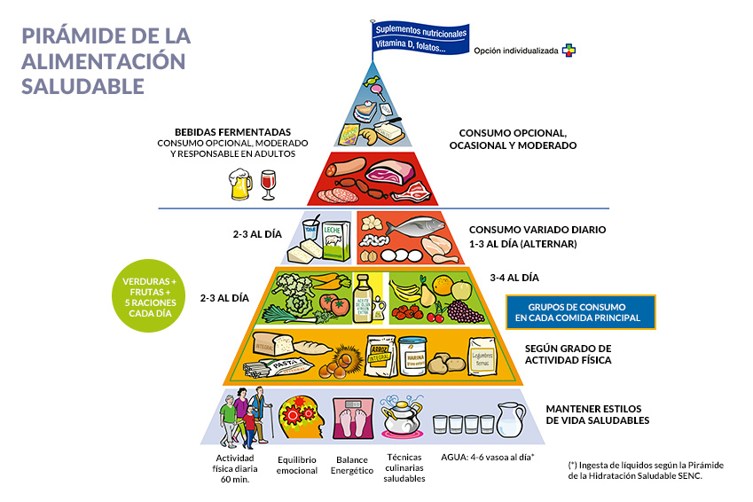

-Instruccion a la nutricion.
Alisha Polnaco
Nutrición es el proceso de consumo, absorción y
utilización de
los nutrientes necesarios
para el
crecimiento y el desarrollo del organismo y para el mantenimiento de la vida.
Una alimentación adecuada y apropiada solo se consigue consumiendo una dieta equilibrada, formada por
una diversidad de nutrientes,
que son las sustancias contenidas en los alimentos que nutren el
organismo. Una dieta saludable permite mantener un peso corporal apropiado
y equilibrado en su
composición (el porcentaje de grasa y músculo del organismo) y garantiza la capacidad
para llevar a cabo
las actividades
físicas y mentales cotidianas.
Si el consumo de alimentos es excesivo, se es más propenso a la obesidad. Asimismo, si se ingieren
grandes cantidades de ciertos nutrientes, por lo
general vitaminas o minerales, los efectos pueden
ser
nocivos (toxicidad). Si la persona afectada no consume suficientes nutrientes puede
aparecer
desnutrición, dando lugar a un trastorno por carencia nutricional.
Una dieta equilibrada tiene que
tener...
Dieta equilibrada es aquella que nos aporta todos los nutrientes que necesitamos para el
funcionamiento óptimo de nuestro organismo.
Una nutrición equilibrada aporta la proporción adecuada de macronutrientes (hidratos de carbono,
proteínas y grasas) , micronutrientes
(vitaminas, minerales y antioxidantes) y
fibra, en función de
nuestras características personales: edad, altura, actividad física, estilo de vida y otras
condiciones como puede ser, por ejemplo, padecer una patología.

Proteinas
Grasas
Vitaminas
Minerales
Fibra
Ejemplo de una
dieta equilibrado.
-Desayuno
Pan integral con tomate y aguacate.
Un plátano.
Infusión.
-Media
mañana
Un yogur con un puñado de nueces.
Comida
Ensalada completa de pimientos, tomate, cebolla, garbanzos y
huevo duro.
Una manzana.
-Merienda
Leche con avena. Una pera.
-Cena
Plato de col con patata.
pechuga a la plancha.
Un yogur.
Deje que los alimentos sean
su medicina y que la medicina sea su
alimento
La importancia del agua en la alimentacion.
El agua es un elemento esencial para desarrollar todos los procesos fisiológicos como por ejemplo digestión,
absorción y eliminación de desechos metabólicos que no se pueden digerir, y también para al función del
aparato circulatorio, ya que este líquido vital forma parte de la sangre y mediante esta los nutrientes
pueden llegar hasta las células de organismo y conservar nuestra salud, además de la temperatura corporal.
Aunque no necesariamente es una fuente de nutrientes para el organismo, este elemento es un complemento
para subsistir; solo podríamos dejar de tomarla
no más de una semana.
Se recomienda consumir entre 1 y 2 litros de este vital líquido al día para ayudar al organismo a
realizar sus funciones cotidianas.